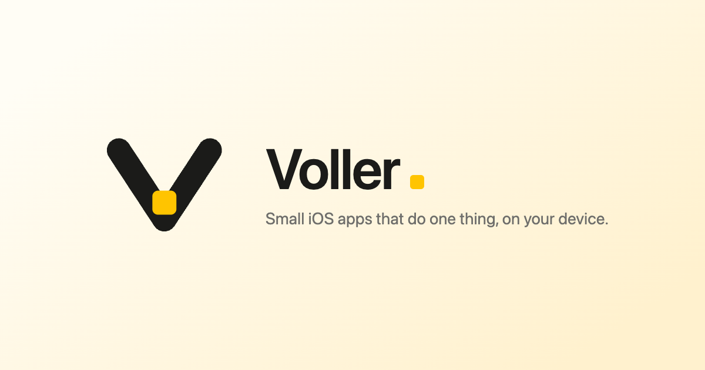

brand-yellow/ · ready to upload
The 4c ladder, exported.
Eighteen files. The field bottom is #FFF1CE, not the #FFEFC4 you saw in 4c — the draft stop put muted at 4.48:1.
The mark · three variants
light
dark · transparent
tinted
Dark inverts the V to cream-dark — an ink V on transparency composites to invisible. The tile stays yellow, because fills don't change between fields.
Favicon · the inverted simplification
96
32
16
Full-bleed yellow, ink channel, tile dropped. The pale field can't hold a thin V in a tab strip.
Home screen and manifest
180
512
192
Against the four apps
Voller
UnJumble
Meals
UnPickle
Riverly
Wordmark · outline only, CSS is canonical
Tile at --yellow, gap corrected to 0.2 × cap height for the system stack — the old file was spaced for DM Sans.
Social card · 1200 × 630

Mark and wordmark together — sanctioned here by §4.1's set clause, not by the header rule, which still forbids the pair. Swap the strapline for whatever voller.uk ships.
Two things I could not do from here
favicon.ico — the 32 + 16 PNGs are in the folder; the container needs an ICO packer, which isn't something I can write here. Most browsers take favicon.svg now, so this is only for legacy.
The website's src/index.css — the token block is in VOLLER-COLOUR-YELLOW.md ready to paste, but the green→yellow substitution isn't mechanical: each site is either chrome or a product control. Point me at the repo and I'll do the pass properly.